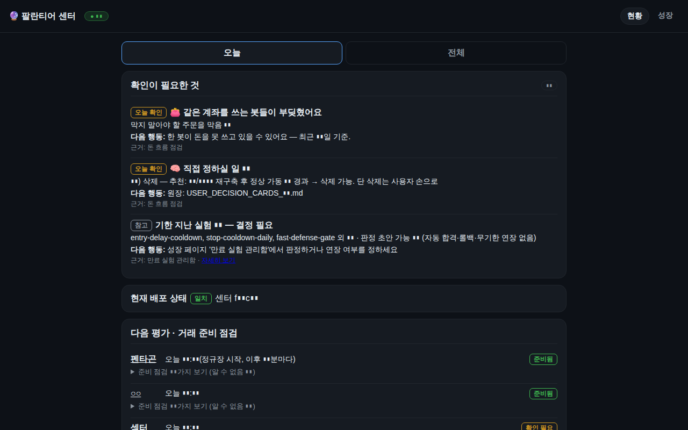

실전 가동
주식 자동매매
💵 실돈Claude Code
토스증권 자동매매봇 Toss Stock Bot
토스증권 Open API로 ETF 듀얼모멘텀 로테이션을 돌리는 자동매매봇 (모의 코어 + 실계좌 관리봇)
토스증권 Open API(시세·주문·계좌)를 직접 붙여 만든 첫 매매봇이다. 절대모멘텀(200일선)으로 추세 ON/OFF를 정하고 상대모멘텀으로 상위 ETF를 고르는 듀얼모멘텀 로테이션이 중심이다.
시장 브레드스·크로스애셋 레짐·환율 등 외부 키 없이 토스 데이터만으로 계산한 시장지능으로 총노출을 조절하고, ATR 손절과 샹들리에 트레일링으로 리스크를 관리한다.
모의(DRY) 가상원장 위에서 여러 변형 전략을 병렬로 돌리는 섀도북으로 아웃오브샘플 A/B 검증을 하고, 텔레그램 양방향 명령(상태·포지션·일시정지)과 일일 연구 브리핑 타이머를 갖췄다.
2026-07부터는 지정한 소수 ETF에 한해 화이트리스트와 체결확인 하드닝을 건 실계좌 관리봇(모멘텀 로테이션)이 함께 가동된다. 코어 로그상 DRY 스냅샷과 관리봇 실주문 경로가 공존하므로 두 층을 구분해서 봐야 한다(실주문 활성 여부는 환경설정이라 직접 확인하지 않음).
- 기간
- 2026-07 ~ 2026-09-24
- 기술
pythonsqlitetelegramsystemdtoss-open-api- 코드
- 30,134 줄
- 테스트
- 524 개
- 커밋
- 59
- systemd 유닛
- 3 개
- 저장소
- intohumble-ai/toss-stock-bot (비공개)
세션 0 (Claude Code 0 · Codex 0)마지막 활동 2026-09-24
- 2026-09-24 16:10커밋test(managed): 재정지·재해제 시 휴식 표식 해제 박제(5차 감사 P3-1)
- 2026-09-24 16:01커밋test(managed): STARTED 성적표 ERROR 표기 단언 보강
- 2026-09-24 16:01커밋fix(managed): 4차 재감사 — 시작 후 중단된 사이클은 ERROR, 재기동 뒤 일시정지 해제 인식, 문구·늦은실행 보정
- 2026-09-24 15:52커밋test(managed): 시도한 날 휴식 판정 금지 이중방어 박제
- 2026-09-24 15:52커밋fix(managed): 3차 재감사 — '일시정지 휴식' 은 창 끝까지 일시정지였고 오늘 시도가 없을 때만
- 2026-09-24 15:47커밋fix(managed): 재감사 P2-A — 일시정지 표식은 매매창 시간에만, 늦은 실행 전 성적표 보류, 일시정지일 표기
- 2026-09-24 15:36커밋fix(managed): 콜드감사 반영 — 성적표 전 MISSED 판정·수익률 단일 정의(perf_v2 비교창)·일시정지 오보 제거
- 2026-09-24 15:22커밋fix(managed): 전수감사 0924 — A5 누락사이클·M-02 성과정의·M-04 수수료·M-06 vanish·M-08·§2 격리
- 2026-09-15 19:01커밋feat(bench): ○○이봇 벤치 V2 — 섀도 3중에 배정(ALLOCATION) 미러(워터마크·멱등·소급 없음), perf_v2(원화 TW
- 2026-09-15 13:17커밋feat(fleet): ○○이봇 싱글턴 런타임 가드 + ext(§1.4) + attestation(§1.5) 발행 — 코어 6봇 계약 완성
- 2026-09-15 11:45커밋feat(managed): 명시적 운용예산 배정 큐 — 사용자 입금이 봇 예산에 닿는 정식 경로(사이드카, capital_events ALLOC
- 2026-09-12 17:26커밋fix(managed): 수위계 관측을 로테이션 발동일 밖으로 + 30거래일 채점 event-date 기반
세션 제목과 커밋 제목만 표시합니다. 대화 내용·파일·경로는 공개하지 않습니다.
- 듀얼모멘텀 ETF 로테이션(절대 200일선 + 상대 3/6/12개월 합성)
- 자체계산 시장지능: 브레드스·크로스애셋 레짐·환율 기반 총노출 배율
- ATR 손절·샹들리에 트레일링·종목당 ▮% 캡 리스크 레이어
- 안전 슬리브(단기채) 방어 전환
- DRY 가상원장과 백테스트 엔진(일봉 페이지네이션)
- 섀도북: 여러 변형 전략 병렬 페이퍼 운용과 리더보드
- 실계좌 관리봇: 화이트리스트·체결확인·오배정 가드·드리프트 점검
- 텔레그램 양방향 명령(/status /positions /shadow /report /pause)
- 일일 연구 브리핑 타이머(리플레이·어트리뷰션·디케이)
- US 대가 위원회(AI) 모의 운용 실험
- params_live 사이드카로 재시작 없는 파라미터 조정
서비스active
마지막 로그오늘
마지막 커밋2026-09-24
데이터 기준2026-10-10 15:18
테스트 수524
실적·잔고·수익률은 공개 정책상 표시하지 않습니다(설정으로 켤 수 있음). 상태는 PC 의 빌더가 10분마다 읽어 올립니다.
실제 화면을 찍은 뒤 숫자·식별자를 자동으로 가린 스크린샷입니다.

가짜 데이터로 돌아가는 미니 데모입니다. 직접 눌러보세요. (실 계좌·실 API 와 연결돼 있지 않습니다)
새 창에서 열기 →- 백테스트 중 스톱 구조 버그(승자 절단)를 고치자 성과가 크게 개선됨 — 손절 설계가 수익 구조를 좌우
- 테스트가 실서비스 상태를 건드리지 않도록 LIVE 봇 테스트 격리(모듈 상수 직접 override)가 필요했음
- 수동 매수 후 수량만 동기화했다가 의도치 않은 매도가 난 ○○이봇 사고 — 관리봇 가드 강화로 이어짐
- 매매창(14:30 전후)에는 재시작·API 호출을 피하는 운영 규칙 확립
- 토스 API는 1분/일봉만 지원하고 샌드박스가 없어 DRY 원장을 직접 만들어야 했음
이 프로젝트에 등록된 아이디어가 아직 없습니다.